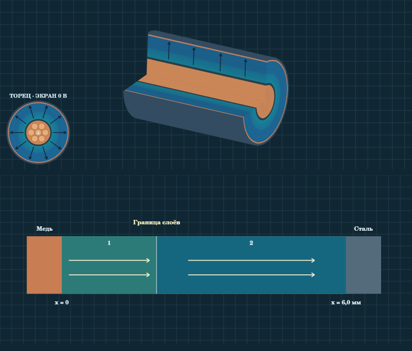
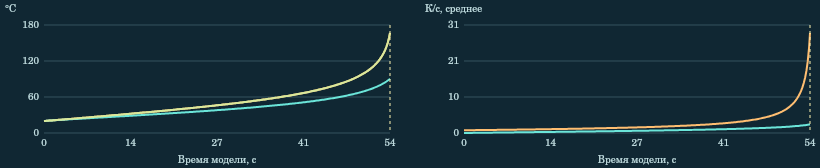

Тема 8. Механизмы пробоя твёрдых диэлектриков
Цель. Научиться различать кратковременный электрический пробой, тепловую неустойчивость и разрушение после длительного воздействия. Для каждого механизма нужно связать условия опыта с наблюдаемым признаком и назвать ограничения вывода.
1. Три механизма
| Механизм | Что происходит | Что наблюдать на стенде |
|---|---|---|
| Электрический | Сильное поле создаёт условия для быстрого роста проводимости и образования канала. | Импульс U(t), максимальное поле и долю толщины, пройденную каналом. |
| Тепловой | Диэлектрик выделяет тепло. Если отвод не уравновешивает потери, а сами потери растут с температурой, нагрев может ускориться. | Температуру около жилы и у внешней границы, кривые тепловыделения и теплоотдачи. |
| При длительном воздействии | Повреждения накапливаются. В зависимости от материала и условий возможны химические превращения, частичные разряды и рост дефектов. | Сравнение темпа условного повреждения при одинаковом напряжении и разных настройках влажности. |
Разные механизмы могут участвовать в одном отказе. Короткий импульс способен завершить разрушение ранее повреждённой изоляции. Сам след пробоя не устанавливает первопричину.
2. Поле и потенциал
Напряжённость E показывает силу, действующую на единичный положительный заряд. Потенциал φ отсчитывают относительно выбранного нуля. На стенде за ноль принят потенциал металлического экрана кабеля или стали паза. Вектор E направлен в сторону убывания φ. При смене знака U направление меняется. В нулевой фазе учебной синусоиды поле равно нулю.
Для плоского однородного слоя вдали от краёв E = U/d. Для пакета без свободного заряда на границах нормальная составляющая электрической индукции D непрерывна:
S = Σ(dᵢ/εᵣᵢ), Eᵢ = U/(εᵣᵢ S), ΔUᵢ = Eᵢdᵢ.
Здесь dᵢ — толщина, εᵣᵢ — относительная диэлектрическая проницаемость, ΔUᵢ — падение напряжения. При U в кВ и d в мм поле выражается в кВ/мм. Сумма падений равна U. Потенциал непрерывен, поле на границе разных материалов может измениться скачком.
Для однородного длинного коаксиального кабеля с радиусами a и b:
Eᵣ(r) = U/[r ln(b/a)], φ(r) = U ln(b/r)/ln(b/a).
Для нескольких концентрических слоёв с внутренними и внешними радиусами aᵢ и bᵢ:
Sᵣ = Σ[ln(bᵢ/aᵢ)/εᵣᵢ], Eᵣᵢ(r) = U/(εᵣᵢ Sᵣ r).
Величина Sᵣ безразмерна, ln — натуральный логарифм. Внутри каждого слоя модуль поля убывает как 1/r. Потенциал в точке получают интегрированием поля от этой точки до заземлённого экрана. На границе слоёв сравнивают показания щупа с обеих сторон. Оболочка расположена снаружи экрана и не входит в расчёт основного поля.

3. Чтение трёх опытов
Электрический пробой
Установите «Ниже порога» и «Выше порога». Треугольный импульс задаёт U(t). Стенд рассчитывает максимальный модуль E по всем слоям. Канал начинает условно расти при |E| ≥ 12 кВ/мм и продолжает рост при |E| ≥ 7 кВ/мм. Сравните импульсы одинакового пика и разной длительности. Порог, форма и скорость роста заданы для демонстрации. Эти значения не являются электрической прочностью конкретного кабеля.
Тепловой пробой
Тепловой баланс включает выделение тепла, перенос между кольцами и обмен с внешней средой. Для сравнения при неизменной температуре в модели источник пропорционален f·U², где f — частота, U — действующее напряжение. При нагреве источник дополнительно растёт. Если при ненулевых потерях температура выходит на плато и средний отвод уравновешивает выделение, установился устойчивый режим. Если среда горячее изоляции, теплоотдача со знаком минус означает приток тепла извне.
В тепловом опыте начальная температура 20 °C, остановка происходит при достижении или пересечении 165 °C. Это учебная граница. Для сравнения используйте одинаковый момент времени или отдельно укажите время остановки.

Длительное воздействие
При 20 кВ сравните условно сухой и увлажнённый образцы. По графику отметьте время достижения 50% повреждения. Шкала времени условная. Настройка влажности и результат сравнения не дают срок службы или содержание воды в реальном полимере.
4. Как работать с тренажёром
- Откройте нужный раздел, запишите исходный режим и поставьте «Пуск». Кнопки находятся над моделью.
- В разделах «Кабель · 2–3 слоя» и «Слои в пазу двигателя» «Пуск» показывает один период синусоиды в замедлении. При ручном выборе фазы 90° соответствует заданному знаковому пику, 180° — нулю, 270° — противоположному пику.
- Щуп ставится нажатием на торец кабеля или на слой в окне расчёта паза. На графиках профиля маркер показывает координату щупа. Для теплового, импульсного и длительного опыта ползунок времени возвращает к выбранному кадру.
- Перед сравнением изменяйте один параметр. Для временного опыта сохраните первую кривую. Запишите значение с единицами и вывод в одном предложении.
Самопроверка. Почему на границе слоёв φ остаётся непрерывным? Почему максимум поля в многослойном кабеле проверяют у внутренних границ всех слоёв? Как график отличает нагрев от внешней среды и от внутренних потерь?
Источники
- В. Ф. Важов, В. А. Лавринович. Техника высоких напряжений. ТПУ, 2014. § 1.2.2, в том числе рис. 1.38 и § 1.2.2.3.
- J. Stiles, University of Kansas. Electrostatic Fields of a Coaxial Line.
- IEC 60034-18-42:2017+A1:2020. Квалификация систем изоляции типа II для машин с питанием от преобразователей. Приведено как контекст для кейса двигателя.